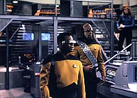
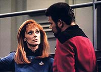
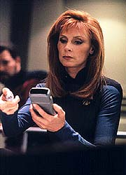
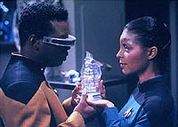
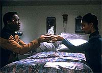

|
MANCHETE
DO EPISDIO
Poderia
ter sido uma bela trama poltica,
mas foi mais um "monstro da semana"
Episdio
anterior | Prximo
episdio
Sinopse:
Data Estelar: 46461.3.
A Enterprise chega a uma estao de transmisso subespacial da
Federao perto da fronteira Klingon que no responde a
tentativas de contato. Riker, Geordi e Beverly Crusher abordam o
posto para investigar, e descobrem apenas um cachorro abandonado e o
que parecem ser os restos mortais de Aquiel Uhnari, uma tenente da
Frota Estelar.
 A equipe tenta
descobrir precisamente o que aconteceu investigando uma nave
auxiliar abandonada atracada estao. Ao estudarem os danos na
nave, Beverly e Riker suspeitam que Aquiel e o tenente Rocha, seu
colega desaparecido, possam ter sido vtimas de um ataque Klingon.
De volta Enterprise, Geordi estuda os registros pessoais de
Aquiel, na tentativa de descobrir o que houve. Em uma mensagem dela
para sua irm, Shianna, Aquiel menciona seus temores de um Klingon
chamado Morag. Geordi continua a investigar nos dirios pessoais e
descobre que Aquiel tem uma relao delicada e conflituosa com o
tenente Rocha.
Geordi comunica ao capito sobre o possvel envolvimento Klingon
no incidente. Picard contata o governador Klingon Torak. Num
primeiro momento, o guerreiro reticente, mas acaba decidindo
ajudar a Enterprise em suas investigaes. Em reunio com a
tripulao snior da nave, Torak surpreende todos apresentando
Aquiel --viva! Ela explica que Rocha a atacou e que ela escapou para
o espao Klingon com uma nave auxiliar. Logo, os restos mortais
encontrados na estao deveriam provavelmente ser de Rocha, mas
ela no se lembra precisamente do que teria ocorrido.
 Para
ajudar a esclarecer o que realmente aconteceu, Picard pede para
falar com o comandante Morag, o Klingon que supostamente teria
intimidado Aquiel. Atrado por essa estranha to familiar por seus
dirios, Geordi acaba formando uma amizade com Aquiel, que ele leva
at o bar panormico. Ele revela que tem estudado seus dirios e
sua correspondncia pessoal em uma investigao. Ele ento
pergunta sobre Rocha, e ela diz que no gostava do tenente, mas
nunca poderia desejar sua morte. Ela percebe, entretanto, que a
tripulao da Enterprise a tem como suspeita de assassinato.
Enquanto isso, Beverly continua a examinar os resduos celulares
encontrados na estao, e Riker e Worf descobrem um feiser largado
na nave auxiliar, configurado para matar. Com esse achado, Riker e
Worf questionam Aquiel, e ela segue insistindo que no seria capaz
de matar seu colega. Geordi acompanha o interrogatrio e fica bvio
que ele acredita em sua nova amiga.
O comandante Morag chega Enterprise e encontra a tripulao snior.
Ele admite que esteve presente quando Rocha foi morto e que apagou
registros da estao. Geordi ento confronta Aquiel sobre o
apagamento de trechos dos dirios de Rocha, e ela explica que fez
aquilo porque Rocha estava dizendo que ela era insubordinada e
beligerante. Assustada com a possibilidade de essa evidncia conden-la
pelo assassinato de Rocha, ela s concorda permanecer na Enterprise
porque Geordi acredita nela. Ele e Aquiel usam um antigo mtodo do
povo dela para unio e compartilhamento de seus pensamentos.
 Enquanto Beverly
est conduzindo mais testes no DNA encontrado, o material
voluntariamente a toca e forma uma rplica perfeita de sua prpria
mo. Em razo disso, ela suspeita que o Rocha real possa ter sido
porto por esse estranho organismo, e uma rplica dele pode ter
atacado Aquiel na busca por um novo corpo. Repentinamente, o co de
Aquiel se transforma na criatura bem na frente de Geordi.
Felizmente, o engenheiro consegue se defender contra a criatura
bizarra, que aparentemente trocou de forma de Rocha, para Aquiel,
para seu co.
Com a criatura contida, Aquiel deixa a Enterprise, esperando poder
reencontrar seu amigo Geordi no futuro.
Comentrios:
"Aquiel"
uma decepo em todos os aspectos. Em primeiro lugar, o episdio
se apia em Geordi La Forge apenas o suficiente para torn-lo o
principal foco da histria, mas ainda de forma ambgua, sem de
fato trazer qualquer desenvolvimento ou aprofundamento para o
engenheiro. Ele sai da histria to raso quanto entrou, em mais
uma oportunidade perdida.
Depois, as possibilidades que se abrem para o enredo so to mais
interessantes que o desfecho. Um crime misterioso ocorre na
fronteira Klingon. H um Klingon suspeito, representantes
governamentais conduzindo uma investigao, um mistrio que pode
at mesmo levar a um conflito entre a Federao e o Imprio. Um
exemplo do que uma premissa dessas pode render "The
Mind's Eye", da quarta temporada, que curiosamente tambm
tem como principal foco Geordi La Forge.
 Em
compensao, o que ganhamos aqui? Um legtimo desfecho no formato
"monstro da semana", com direito a inmeras foraes
de barra. No bastasse a soluo ser horrvel, ainda fica o
vislumbre de que poderia ter sido infinitamente melhor, caso os
produtores tivessem a coragem de abandonar a premissa inicial (um
serial killer metamorfo invade a Enterprise), que por sinal uma
das mais batidas da histria de Jornada nas Estrelas e da
fico cientfica em geral.
Alm do problema inerente premissa e, especialmente, ao seu
desfecho, ainda h uma situao grave a ser resolvida: muito
tempo para pouca histria. Infelizmente, essa mais uma coisa que
no trabalhada pelos roteiristas, deixando para a audincia um
episdio que, alm de batido, chato e arrastado. Para
exemplificar a situao, basta ver quanto tempo levou para que
Crusher descobrisse que h alguma espcie de criatura metamrfica
envolvida no crime, algo que ela faz de forma absolutamente
acidental depois da metade do episdio.
De Geordi, tudo que aprendemos que o sujeito mais carente do
que seria considerado saudvel. Em meio a uma investigao
criminal (alis, por que foi ele a analisar os dirios da tenente
Uhnari, em vez de Worf, o chefe de segurana?), o engenheiro
conseguiu ficar envolvido por Aquiel antes mesmo de ela dar o ar da
graa na Enterprise (quando ela aparece, j est claro que Geordi
est balanado). Essa caracterstica do engenheiro j havia sido
enfatizada em vrios outros episdios da srie ("Booby
Trap", do terceiro ano, o que primeiro vem mente), de
forma at mais interessante, de modo que no h nenhum ganho real
aqui.
Ao contrrio, a repetio da mesma histria s faz com que
vejamos o engenheiro como um dos mais bidimensionais personagens da
srie. No fosse pelo talento e pela simpatia de LeVar Burton, La
Forge poderia no ter ficado muito longe de ser um Wesley Crusher
ou um Travis Mayweather.
 Do ponto de vista tcnico,
o episdio competente. A direo no afeta negativamente o
segmento, que arrastado em razo do roteiro e da falta de contedo.
Cobrar do diretor o resultado final seria como reclamar com Robert
Wise pelo ritmo lento de "Jornada nas Estrelas: O
Filme". Se a histria pede isso, no h o que fazer.
Os efeitos especiais tambm so bem satisfatrios, tanto com as mltiplas
tomadas espaciais da Enterprise, da estao da Federao e da
nave Klingon, como com a representao da criatura coalescente.
Mas no h nada que realmente impressione.
No fim das contas, no h nada pelo qual algum possa querer
rever este episdio, ou ainda refletir sobre sua importncia na srie.
"Aquiel" foi mesmo feito para ser esquecido.
Citaes:
Worf - "Have the courage to
admit your mistakes!"
("Tenha coragem para admitir seus erros!")
Aquiel - "Well, actually, I've been stuck on this station
for over nine months, we might just go to some place with
activity."
("Bem, na verdade, estou encalhada nessa estao por nove
meses j, poderamos ir a algum lugar com atividade.")
Geordi - "I know just the place."
("Eu conheo o lugar ideal.")
Trivia:
 Renne Jones, a Aquiel, embora seja relativamente jovem, veterana
de sries de TV, tendo participado como convidada em episdios de
"Anjos da Lei", "O Rei do Pedao", "L.A.
Law", "Carro Comando" e a novela "Days of our
Lives". No cinema seu filme de maior sucuesso foi
"Sexta-Feira 13 Parte VI", em que intepretou Sissy Aker,
uma das vtimas do assassino Jason Voorhees.
Renne Jones, a Aquiel, embora seja relativamente jovem, veterana
de sries de TV, tendo participado como convidada em episdios de
"Anjos da Lei", "O Rei do Pedao", "L.A.
Law", "Carro Comando" e a novela "Days of our
Lives". No cinema seu filme de maior sucuesso foi
"Sexta-Feira 13 Parte VI", em que intepretou Sissy Aker,
uma das vtimas do assassino Jason Voorhees.
Wayne Grace, o governador Torak, tambm participou de um episdio
da srie "Sexta-Feira 13", mas na parte IV. Alm disso
ele pode ser visto em episdios da seguintes sries:
"Kojak", "Mulher-Maravilha",
"Starman", "Contos da Cripta",
"Arquivo-X", "Time Trax", "Frasier" e
"Seinfeld". E quem gosta de videogames pode ouvir sua voz
nos jogos "Baldur's Gate II" e "Baldur's Gate: Dark
Alliance". Grace ainda fez um Cardassiano em "Wrongs
Darker than Death or Night", da sexta temporada de Deep
Space Nine.
Uma curiosidade a respeito de Cliff Bole, o diretor deste episdio
e de muitos outros das diversas sries de Jornada, que a
raa Boliana tem esse nome em homenagem a ele!
Aqui h um pequeno blooper. Aquiel refere-se a Base Estelar 212
como "Base Estelar 12".
"Aquiel" considerado por muitos como o pior episdio
da Nova Gerao, atrs at mesmo do infame "Shades
of Gray".
Ficha
tcnica:
Histria de Jeri Taylor
Roteiro de Ronald D. Moore & Brannon Braga
Direo de Alexander Singer
Exibido em 01/02/1993
Produo: 139
Elenco:
Patrick Stewart como
Jean-Luc Picard
Jonathan Frakes como William Thomas Riker
Brent Spiner como Data
LeVar Burton como Geordi La Forge
Michael Dorn como Worf
Gates McFadden como Beverly Crusher
Marina Sirtis como Deanna Troi
Elenco convidado:
Renee Jones como
Aquiel
Wayne Grace como governador Torak
Reg E. Cathey como comandante Morag
Majel Barrett-Roddenberry como a voz do computador
Episdio
anterior | Prximo
episdio
|